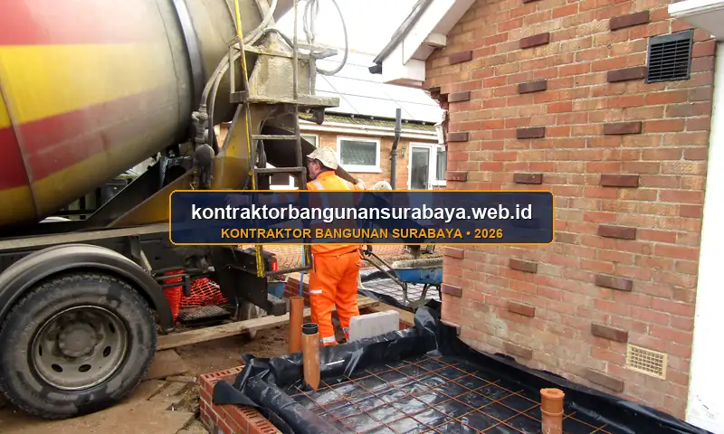

1. Bagaimana Cara Mengawasi Proyek Bangun Rumah Baru agar Sesuai Rencana?
Mengawasi proyek bangun rumah baru agar sesuai rencana membutuhkan checklist pengawasan pada setiap tahap kritis, mulai dari kesesuaian gambar kerja saat pekerjaan struktur, kualitas material yang datang ke lokasi, hingga evaluasi progres dibanding jadwal yang disepakati.
kontraktorbangunansurabaya.web.id menerapkan sistem pengawasan berlapis agar pemilik rumah tetap memiliki kendali penuh atas jalannya proyek meski tidak selalu berada di lokasi setiap hari. Langkah ini memastikan setiap rupiah yang diinvestasikan dalam proyek bangun rumah baru terwujud dalam wujud fisik bangunan yang kokoh, presisi, dan bebas biaya tambahan tak terduga.
Pilar Utama Keberhasilan Manajemen Proyek
Keberhasilan proyek konstruksi ditentukan oleh sinkronisasi tiga elemen utama (Triple Constraint): kesesuaian mutu teknis (quality), ketepatan durasi kurva-S (time), dan transparansi pengelolaan anggaran RAB (cost).
2. Titik-Titik Kritis yang Wajib Diperiksa Selama Pelaksanaan
Beberapa titik kritis yang sebaiknya tidak luput dari pengawasan antara lain kedalaman dan dimensi pondasi sebelum ditutup kembali, posisi dan jumlah besi tulangan sebelum pengecoran kolom dan balok, serta kemiringan pipa pembuangan sebelum ditutup lantai, karena kesalahan pada titik-titik ini sulit diperbaiki setelah pekerjaan berikutnya berjalan.
Pemeriksaan kesesuaian ukuran ruangan dengan gambar kerja pada tahap pasangan dinding juga penting dilakukan sejak dini, mengingat kesalahan ukuran yang baru diketahui setelah dinding jadi akan membutuhkan pembongkaran yang memakan waktu dan biaya tambahan.
| Tahapan Konstruksi | Titik Kritis yang Diperiksa | Metode Pengujian / Verifikasi | Tindakan Sebelum Tertutup |
|---|---|---|---|
| Pekerjaan Pondasi | Kedalaman galian tanah keras, dimensi foot plat & sloof | Uji sondir tanah, meteran ukur silang (theodolite) | Foto dokumentasi elevasi & izin cor tertulis |
| Struktur Beton & Dak | Diameter besi ulir, jarak begel, ketebalan selimut beton | Uji slump cone cor, uji kuat tekan silinder lab | Pembersihan debu bekisting sebelum penuangan |
| Plumbing & Sanitasi | Kemiringan pipa buang (min. 1-2%), sambungan lem PVC | Water test (uji genang air & tekanan pipa) | Cek bebas bocor sebelum cor plat lantai |
| Pasangan Dinding & Kusen | Ketegakan lot dinding, kesikuan sudut ruangan 90° | Waterpass digital, siku ukur presisi, benang lot | Koreksi ukuran sebelum pekerjaan plester aci |
Dokumentasi foto pada setiap tahap kritis, terutama sebelum elemen tersebut tertutup oleh pekerjaan berikutnya, menjadi praktik yang sangat dianjurkan, karena foto ini bisa menjadi bukti dan acuan apabila di kemudian hari muncul pertanyaan mengenai kondisi struktur yang sudah tidak terlihat lagi secara visual.
Pemeriksaan hasil uji slump dan sampel beton pada setiap pengecoran juga sebaiknya menjadi bagian dari checklist pengawasan rutin, bukan hanya dilakukan sesekali, karena konsistensi mutu beton antar tahap pengecoran turut menentukan keseragaman kekuatan struktur secara keseluruhan.
3. Menyusun Jadwal Kunjungan dan Laporan Progres yang Realistis
Bagi pemilik rumah yang memiliki kesibukan kerja, menyusun jadwal kunjungan rutin ke lokasi, misalnya seminggu sekali pada momen pergantian tahapan pekerjaan, jauh lebih efektif dibanding kunjungan sporadis tanpa pola yang jelas, karena momen pergantian tahapan biasanya menjadi saat paling krusial untuk memeriksa hasil pekerjaan sebelumnya.

Momen Krusial Kunjungan Lapangan
- Pra-Pengecoran: Pengecekan perakitan besi kolom, balok, dan dak cor
- Pra-Plesteran: Pemasangan jalur pipa pipa kabel listrik & pipa air
- Pra-Finishing: Pengecekan kerataan plesteran dinding dan nat lantai
- Pra-Serah Terima: Uji operasional kran, saklar listrik, kunci & engsel
Komponen Laporan Mingguan
- Kurva-S Progres: Perbandingan realisasi fisik versus target rencana
- Dokumentasi Foto Berkelanjutan: Foto titik sudut yang sama tiap minggu
- Catatan Cuaca & Logistik: Rekam jejak kendala hujan atau suplai material
- Rencana Aksi Pekan Depan: Target capaian pekerjaan untuk minggu berikutnya
Laporan progres mingguan dari kontraktor, baik berupa foto maupun catatan singkat, membantu pemilik rumah tetap mendapatkan gambaran perkembangan proyek meski tidak selalu bisa hadir langsung, sekaligus menjadi dokumentasi resmi yang dapat dirujuk kembali apabila terjadi perbedaan pemahaman mengenai progres yang telah dicapai.
Penggunaan aplikasi pesan instan untuk berbagi foto dan update harian, meski sederhana, cukup efektif menjaga komunikasi tetap lancar antara pemilik rumah yang sibuk bekerja dan tim pelaksana di lapangan, dibanding hanya mengandalkan laporan tertulis formal yang frekuensinya lebih jarang.
4. Sistem Pengawasan Berlapis dari kontraktorbangunansurabaya.web.id
kontraktorbangunansurabaya.web.id menerapkan pengawasan berjenjang, mulai dari mandor lapangan yang memantau pekerjaan harian, hingga pengawas proyek yang melakukan evaluasi mingguan terhadap kesesuaian hasil kerja dengan gambar dan RAB, sehingga potensi penyimpangan dapat terdeteksi lebih dini sebelum berdampak pada tahap pekerjaan selanjutnya sebagaimana dirancang dalam tahap desain arsitektur dan RAB detail.
Standar Operasional Pengawasan Berlapis:
- Mandor Lapangan Standby: Mengawal ketepatan teknis tukang, adukan semen, dan disiplin jam kerja harian.
- Site Engineer & Project Manager: Melakukan audit mingguan terhadap mutu struktur, elevasi, dan kesesuaian kurva-S.
- Persetujuan Milestone Pemilik: Memberikan otorisasi tertulis sebelum pekerjaan besar seperti cor dak dimulai.
- Audit Quality Control (QC): Verifikasi independen sebelum penandatanganan Berita Acara Serah Terima (BAST).
Keterlibatan pemilik rumah tetap diusahakan pada momen-momen penting, seperti persetujuan sebelum pengecoran struktur utama, sehingga keputusan besar dalam proyek tetap melibatkan pemilik rumah, bukan sepenuhnya diserahkan kepada tim pelaksana tanpa komunikasi.
Evaluasi akhir sebelum serah terima juga dilakukan secara menyeluruh, mencakup pengecekan fungsi seluruh instalasi listrik dan air, kerapian finishing, hingga kebersihan area proyek, sehingga rumah yang diserahkan kepada pemilik benar-benar dalam kondisi siap huni tanpa pekerjaan tersisa yang terlewat.
Daftar catatan minor (punch list) yang disepakati bersama pada saat serah terima juga membantu memastikan setiap kekurangan kecil, misalnya noda cat atau engsel pintu yang belum sempurna, tetap ditindaklanjuti oleh tim pelaksana dalam periode tertentu setelah serah terima dilakukan.
Perencanaan Matang dari Hulu ke Hilir
Pengawasan yang baik idealnya dimulai sejak tahap perencanaan awal. Simak kembali panduan mengenai jasa bangun rumah baru surabaya serta strategi menyusun RAB konstruksi yang akurat agar seluruh tahapan, dari perencanaan hingga pengawasan pelaksanaan, dapat dipahami secara menyeluruh.
5. FAQ Seputar Pengawasan Proyek Bangun Rumah Baru di Surabaya
6. Konsultasi Gratis Sekarang
Ingin berdiskusi lebih lanjut mengenai kebutuhan konstruksi bangunan Anda di Surabaya? Hubungi tim kami melalui WhatsApp di 0889-8964-3555 untuk konsultasi awal tanpa biaya bersama kontraktorbangunansurabaya.web.id.
Konsultasi WhatsApp di 0889-8964-3555Tim Pengawas Sipil Kontraktor Bangunan Surabaya
Divisi Quality Control & Manajemen Konstruksi Rumah Tinggal. Berpengalaman dalam pengawasan mutu struktur beton bertulang, manajemen kurva-S, dan audit serah terima kunci di wilayah Surabaya Raya.